Ubuntu安装基础教程
作者：Teliute 来源：基础教程网
十三、安装Ubuntu8.10 返回目录 下一课8.10版安装与前面版本类似，我们以光盘安装为例，操作中注意细心，下面来看一个练习；
1、进入live cd桌面
1）设置好光盘启动后，放入Ubuntu光盘，重启动计算机；
2）稍等出来一个语言选择界面，按键盘上的方向键，选择“中文(简体)”，按回车键到下一步；
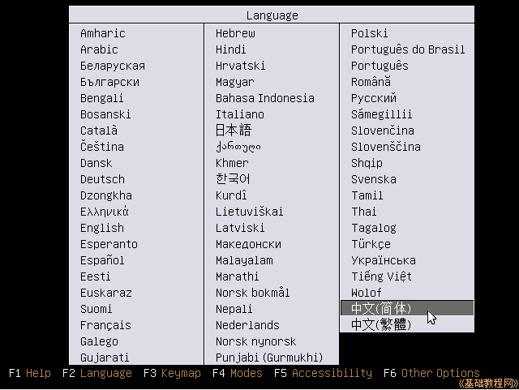
3）接下来出来安装菜单，按回车键进入第一项“试用 Ubuntu..”；
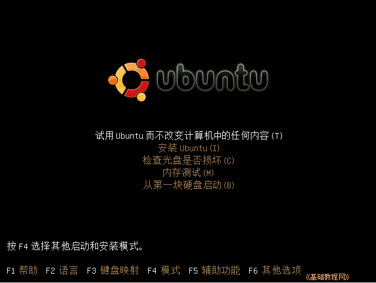
4）再等一会就进入一个桌面，这就是试用的live cd界面，桌面左上边有有两个图标，右上角是“关机”按钮；
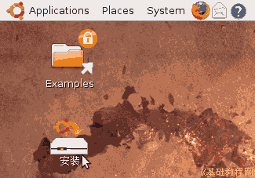
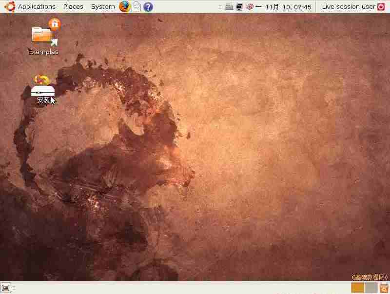
5）双击桌面“安装”图标，稍等出来一个“欢迎”面板，点右下角“前进”按钮继续；
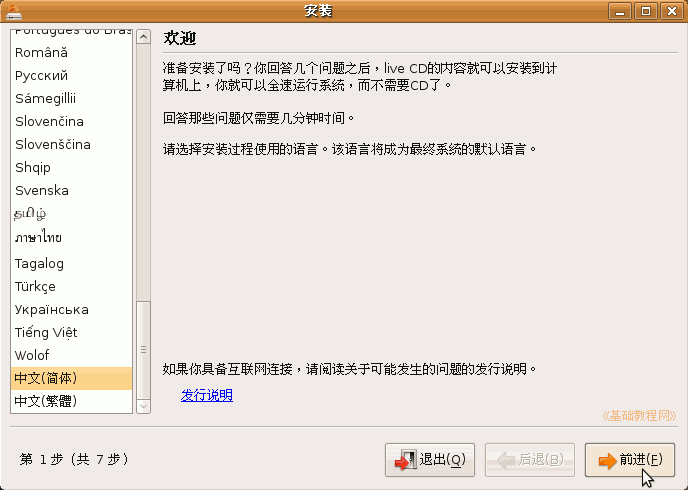
6）第二步是询问所在地，默认选的是上海(shanghai)，这些可以安装好了再调整，直接点“前进”继续；
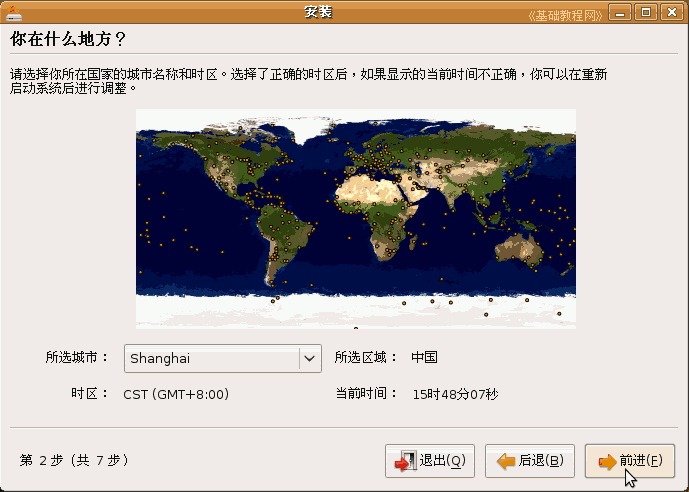
7）接下来第3步是询问键盘布局，检查一下是China，直接点“前进”按钮即可；
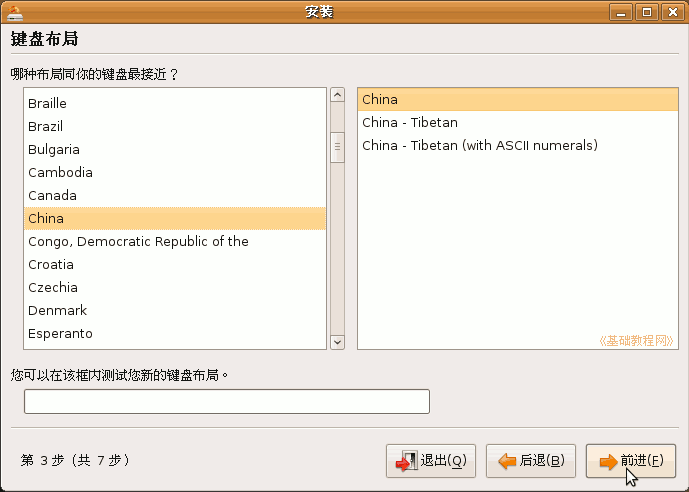
前面这三步都可以选默认的直接前进，第四步分区开始要细致耐心；
2、分区操作
1）在第4步出来的分区面板里，选择下边的“手动”，点“前进”继续；
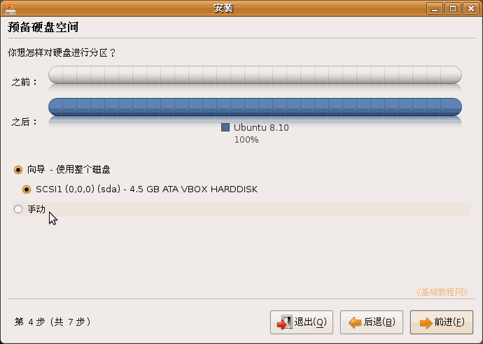
2）点“前进”按钮，出来一个磁盘扫描滚动条，然后显示整个硬盘的分区情况，
如果磁盘还没有分区，点“新的分区表”，一般出现在虚拟机安装里；
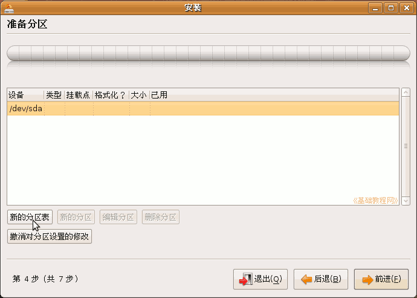
3）如果前面已经准备好了分区，则会显示“空闲的分区”，可以根据大小来判断各个分区；
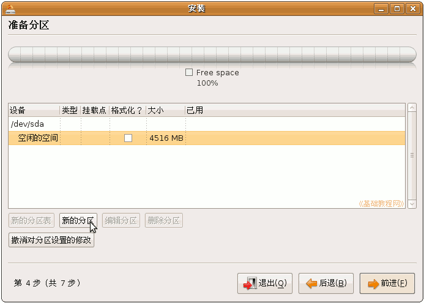
4）点下边的“新的分区”按钮，在出来的面板中输入 / 分区的大小，这是Ubuntu系统的分区，至少要4G以上；
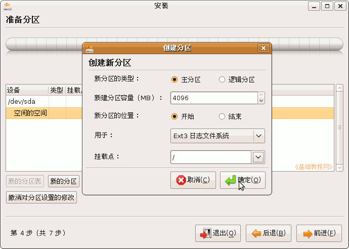
5）接着创建交换分区，这是用于虚拟内存，一般跟自己内存大小相同；
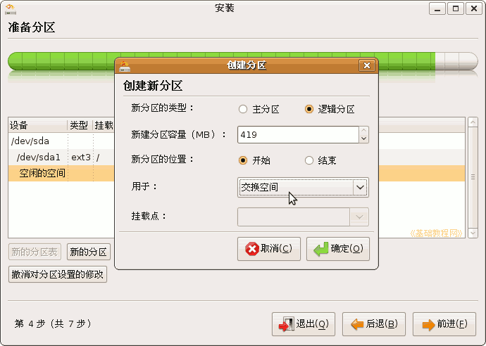
另外还可以分出/home分区，双系统再分一个/boot分区，可以参考第7课，或搜索一下其他分区方案：http://teliute.org/linux/Ubsetup/lesson7/lesson7.html
6）分区好了以后检查一下，然后点“前进”按钮继续；
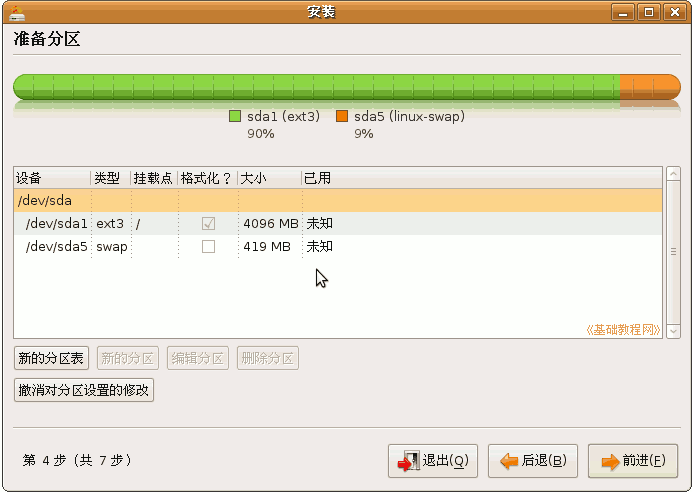
3、用户信息
1）接下来第5步是用户信息，第一行输入名称，第二行用户名那儿要输入英文小写字母，
密码输入两遍相同的，找个本子记一下，后面要经常用到，计算机名称也可以修改一下；
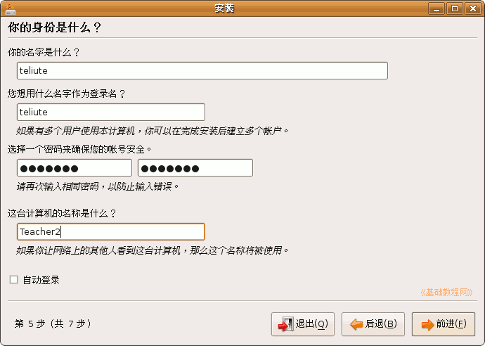
2）点“前进”到第6步“迁移向导”，直接点“前进”继续下一步，这儿是导入WinXP系统的文件，先不导入；
3）点“前进”到第7步准备安装，这儿要细心检查一下，确保没有错误，
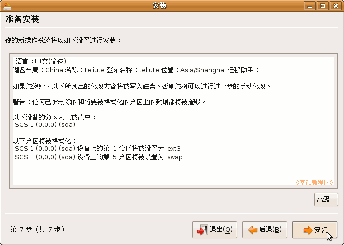
4）如果系统安装了一键还原和其他硬盘保护，则点“高级”按钮，把grub安装到/boot分区里，用grldr来引导，参考第12课；
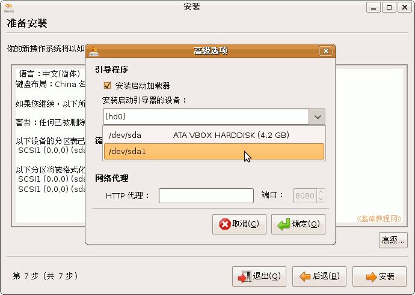
5）然后点“安装”，开始安装系统，一直到完成提示重启；
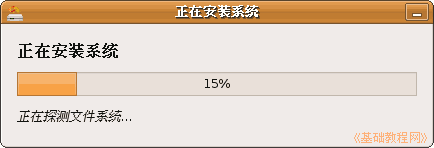
4、设置网络
1）取出光盘，按回车键重启后进入Ubuntu桌面，
点最上边的面板菜单“system－首选项－Network configuration”网络设置；
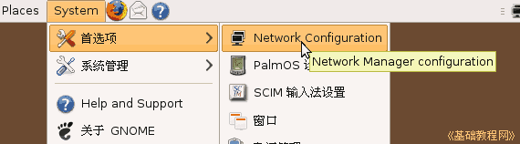
2）如果是局域网上网，选中里面的“Atuo eth0”，点右边的“Edit”编辑按钮；
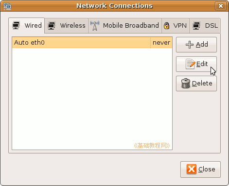
3）进入编辑面板后，点右边的“IPv4 seting”标签，下面的Method：长条上点一下选“Manual”手动设置，
在下面的列表里点击鼠标，第一个填自己的ip地址，第二个是子网掩码，第三个是网关，输完按一下回车键，
下面的DNS里输入自己当地的域名服务器地址；
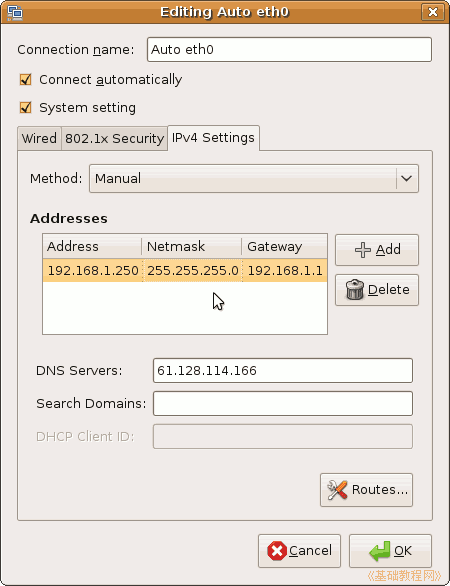
然后点绿色Ok按钮确定，这时候右上角的网络图标提示连网成功，拨号上网的设置可以自己试试；
4）接下来设置源，语言支持，更新软件包，安装自己的软件，可以参考前面的课程，或到Ubuntu中文论坛和wiki中搜索相关内容；
本节学习了安装Ubuntu8.10的基本步骤，如果你成功地完成了练习，请继续学习下一课内容；
本教程由86团学校TeliuTe制作|著作权所有
基础教程网：http://teliute.org/
美丽的校园……
转载和引用本站内容，请保留作者和本站链接。